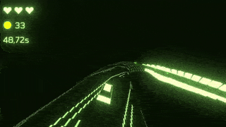
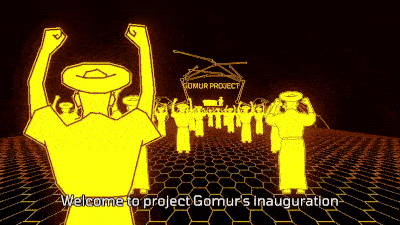
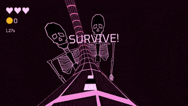
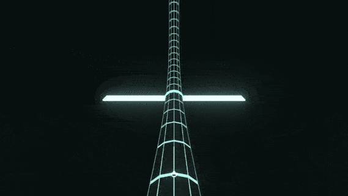

Until this year, I had never developed a game as "Retsa Games" with the intention of selling it; all my previous creations were contract work, small game jams entries or simple experiments made for their own sake. While I had worked as a game developer for six years, I really wanted to make something I designed myself, for myself. Releasing a game on a platform like Steam seemed like the logical next step.
I also had a prototype for what I wanted to do. Last year, I made a weird driving game on donut-shaped tracks called Ultratoro. It was created for the Black and White Jam #8 in twelve days and received great feedback online. When I showcased the game at Argentina's largest gaming expo, the reception was good. Some gamedev friends urged me to expand it into a full release instead of leaving it as a free web game. I also ported the game to Android (an awful experience, Google Play sucks). I had the confidence that the Ultratoro prototype was something special to use as a stepping stone.
So i started making the sequel: "Ultratoro 2", which was not the smartest decision as it was a sequel to a game no one knows. I dropped the 2 much latter on, but you can still see it listed on some parts of Steam as Ultratoro 2.
As soon as the development started i shared gameplay on social media and got some coverage from argentinian gaming sites like Extragamers & No gaming news, which lessened the fear of releasing something that goes completely unnoticed. I also made a lot of new friends.
I had a playable alpha in about a month, and i started to showcase Ultratoro in many gaming events and got tons of feedback. Every aspect of the game design was shapped by watching people play and hearing their opinions. As a developer you develop a blind spot for the aspect of your design that doesnt work, so community is essential. In some ways games design themselves, so it's important not to get attached to specific ideas that might not work and go with the flow.
At first the process of making levels was slow: the weird premise of a tracks being giant moving toruses is not well suited for the standard unity scene editor. Plus, my levels were empty and boring compared to the potential levels the game supports. So its was a great excuse to make something i always wanted to develop: my own level editor. The only thing more fun than making games is developing tools to develop games.
I made a track creator integrated into the game itself. It speed up the development and ended up with better levels. You can upload and download tracks in Steam's workshop. I also used the tool myself to make the official levels.
